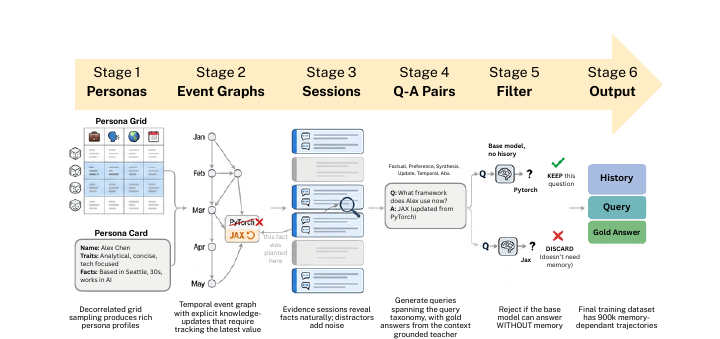
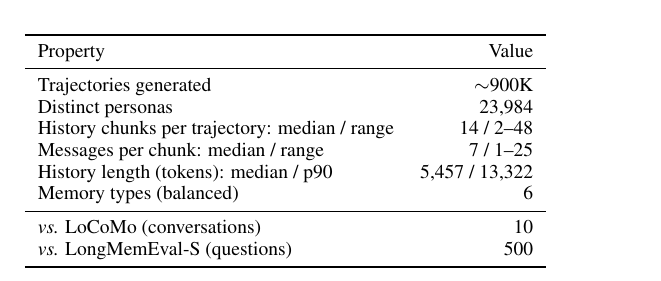
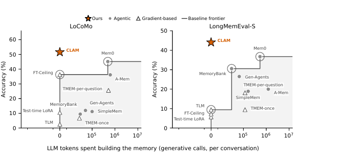
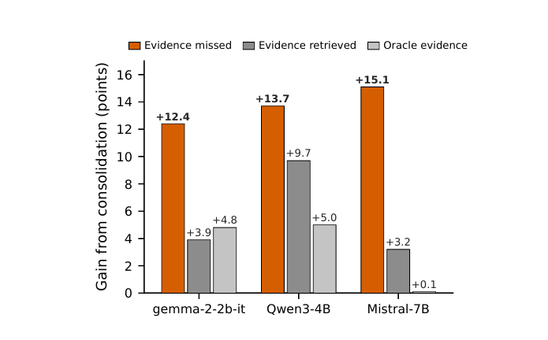
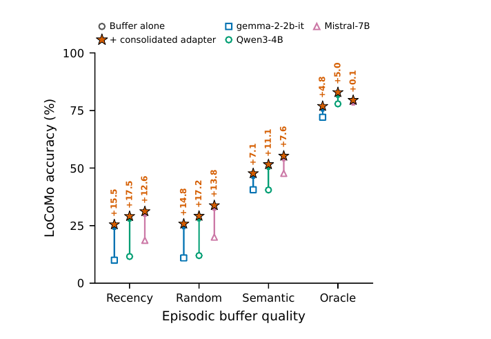
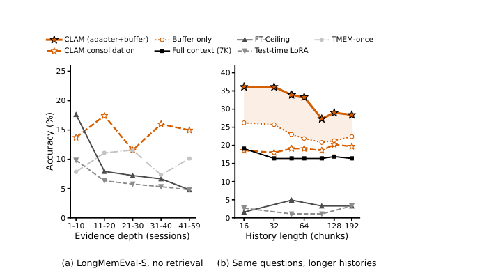

Instant Weight-Space Consolidation
for Long-Term Memory in LLMs
A recurrent hypernetwork folds a stream of conversations into the model’s weights in a single forward pass — no gradient steps, no generated tokens.
University of Maryland, College Park
Preprint · under review
Abstract
Agentic memory systems give LLMs persistent memory by extracting experience into text and retrieving it at query time, but the model itself doesn’t evolve: however many interactions it has had, it starts each query the same. Extraction errors compound, implicit cross-session patterns that no single fragment states cannot be surfaced, and the construction cost grows with every conversation. Fine-tuning on past interactions does change the weights, but requires backpropagation at serving time and degrades on long histories.
We introduce CLAM (Carried Latent Adapter Memory), which combines the strengths of both: a recurrent hypernetwork performs parametric consolidation, compiling a stream of session activations into a low-rank adapter in a single forward pass with no gradient steps and no language-model generation calls, while a complementary episodic buffer supplies verbatim detail at inference. A gated latent state carries knowledge across sessions in fixed size, so the parametric memory accumulates without growing.
On LoCoMo and LongMemEval-S across three open models (2–7B parameters), CLAM leads all agentic baselines by 1–45 points and all gradient-based parametric methods by 10–45 points, while requiring zero generative LLM calls, zero gradient steps, and 3–151× less wall-clock time than extraction systems to build its memory. The two channels are complementary, an empirical instance of complementary learning systems: the consolidated adapter adds 12–15 accuracy points when the episodic buffer misses the gold evidence, and still adds 4–5 points even with an oracle buffer.
The idea
Motivation: all hippocampus, no neocortex
Biological memory is a multi-level process. A fast episodic store captures specific experiences without interference; a slow semantic store integrates those episodes over time into durable, structured knowledge. The bridge between them is consolidation — and after consolidation the organism is physically different.
Contemporary LLM memory systems are sophisticated episodic stores. They extract facts from conversations, organise them into profiles or knowledge graphs, and retrieve fragments into the context window. Whatever consolidation they perform happens in token space and is re-read as context. The model’s weights never change — so implicit patterns that no single fragment states, cross-session structure that requires integration, and preferences that accumulate gradually have no pathway into the model.
CLAM supplies the missing half. It runs two channels at once, and we find they fail in different places — which is exactly why both are needed.
Consolidation channel
A recurrent hypernetwork reads every session’s activations from the frozen base model and folds them into a fixed-size carried state. One forward pass over the accumulated state emits the low-rank adapter the model wears while answering.
- Parametric — knowledge lives in the weights, not the prompt
- Instant — one hypernetwork forward pass, no gradient steps
- Bounded — O(1) per new session; adapter size never grows
Episodic buffer
A fixed parametric state cannot retain every verbatim detail with perfect fidelity — exact dates, proper names, precise figures need lossless surface form. The buffer supplies local evidence to a model whose weights have already been shaped by the full history.
- Minimal machinery — sentence-encoder embeddings, top-k cosine
- Per query — does not modify the base weights
- Orthogonal — stronger indexing only helps further
They are complementary, not redundant. On the 36% of LoCoMo questions whose evidence the buffer misses, the adapter adds +12.4 / +13.7 / +15.1 points on Gemma-2-2B, Qwen3-4B and Mistral-7B. Where retrieval succeeds it still adds +3.9 / +9.7 / +3.2. And even with an oracle buffer that places the gold evidence in context — where redundancy predicts no gain — the adapter adds +4.7 and +5.0 points on Gemma and Qwen.
Method
Method: read, carry, decode
A user interacts with an assistant over a stream of sessions \mathcal{S} = (S_1, \dots, S_N). At query time the system must answer using knowledge distributed across the entire stream. CLAM answers through two channels:
where \theta are the frozen base-model weights, \Delta W is the low-rank adapter produced by the consolidation channel, and C is local context from the episodic buffer. The consolidation channel is computed once per stream and cached; it does not depend on q.
-
Read
Session S_t is passed through the frozen base model and its per-layer hidden states Z_t \in \mathbb{R}^{L \times |S_t| \times d} are collected. A stack of Perceiver cross-attention blocks compresses Z_t into a fixed-size workspace: m latent queries cross-attend into Z_t, with each slot pooling the session independently of the others.
-
Carry
A carried state Q_t \in \mathbb{R}^{m \times d} threads through the stream via a gated recurrence. The Perceiver encoder reads S_t conditioning on Q_{t-1}; a single self-attention layer over the m slots lets them exchange information and reorganise; a gate folds the result into the carried state. The gate produces one scalar per slot, so different slots can retain stable long-lived facts while others are overwritten by new evidence.
g_t = \sigma\bigl(W_g[x_t;\,Q_{t-1}] + b_g\bigr), \qquad Q_t = \mathrm{LN}\bigl((1 - g_t)\,Q_{t-1} + g_t\,x_t\bigr) -
Decode
A single Perceiver decoder block maps the final workspace Q_N to adapter weights, using L \times r output queries — one per (layer, rank-index) pair — each decoded into one rank-1 component, applied to the feed-forward down-projection in every block.
\Delta W_\ell \;=\; \alpha\, B_\ell A_\ell, \qquad A_\ell \in \mathbb{R}^{r \times d_\mathrm{ff}},\; B_\ell \in \mathbb{R}^{d \times r}The adapter rank is fixed regardless of N: accumulation happens inside the carried state, not by growing or merging adapters. Consolidating one additional session is an O(1) update, and the persisted artifact is the same size.
Inference
At query time: (1) load the cached adapter \Delta W = H_\phi(Q_N); (2) retrieve top-k spans C; (3) merge \theta' = \theta + \Delta W; (4) generate y = f_{\theta'}(q, C). Step 1 is amortised across all queries for a given user and needs no LLM calls or gradient steps; step 3 is a free weight merge. The parametric channel is O(1) in the number of past sessions.
Training
CLAM is trained by context distillation: a teacher answers each query with the full session history in context, and the student — the frozen base wearing only the generated adapter, without that history — must reproduce the teacher’s answer.
Only the hypernetwork parameters \phi are updated; the base model stays frozen. Training uses no retrieval, so the adapter alone must carry the answer — forcing the consolidation channel to be self-sufficient. Stage 1 initialises from a released single-document-to-adapter checkpoint with the recurrent machinery added as no-ops; Stage 2 teaches accumulation and gating on multi-session sequences of up to several dozen sessions, with truncated backpropagation through time. The hypernetwork is trained once per base model and never per conversation.
Training data
Training data: ~900K memory-dependent trajectories
No public dataset provides multi-session, memory-dependent training data at scale — LoCoMo has ~10 conversations, LongMemEval a few hundred questions. We build a fully automated six-stage pipeline, driven throughout by Llama-3.3-70B-Instruct, that follows the LongMemEval and LoCoMo recipes (planted evidence, distractor sessions, memory taxonomies) end to end.


Results
Setup
We evaluate on LoCoMo and LongMemEval-S, on three open base models — Gemma-2-2B, Qwen3-4B and Mistral-7B — against ten baselines spanning both the agentic (token-space) and parametric (weight-space) paradigms. All accuracies use one LLM grader (Llama-3.3-70B-Instruct at temperature 0) with an identical prompt for every system; three independent second judges agree at 89.7–94.7% and flip no CLAM-versus-baseline comparison.
Memory at zero construction cost is competitive
CLAM leads every agentic memory system on LoCoMo, and on LongMemEval-S on two of three bases, trailing only Mem0 on Qwen by a non-significant margin — while building its memory with no generative LLM calls, no gradient steps, and no generated tokens.
Table 2: agentic (token-space) memory. LLM-judge accuracy (%) by sub-category. Δ is CLAM minus that row on the paired items, with a 95% bootstrap interval.
| LoCoMo | LongMemEval-S | |||||||||||||
|---|---|---|---|---|---|---|---|---|---|---|---|---|---|---|
| System | Single | Multi | Temp. | Open | Overall | Δ [95% CI] | SSu | SSa | Pref. | M-sess | K-upd. | Temp. | Overall | Δ [95% CI] |
| Base model: Gemma-2-2B | ||||||||||||||
| Mem0 | 50.6 | 45.4 | 19.6 | 29.2 | 41.8 | +6.0 [2.1, 10.3] | 46.4 | 20.0 | 20.0 | 25.9 | 34.5 | 7.1 | 26.3 | +11.7 [2.8, 20.7] |
| A-Mem | 32.2 | 34.4 | 15.6 | 26.0 | 28.7 | +19.0 [14.4, 23.4] | 34.5 | 56.7 | 20.0 | 11.1 | 24.1 | 25.0 | 28.9 | +8.9 [0.6, 17.8] |
| Generative Agents | 15.4 | 16.0 | 2.5 | 12.5 | 12.6 | +35.1 [31.4, 38.3] | 37.9 | 30.0 | 10.0 | 0.0 | 65.5 | 3.6 | 25.6 | +12.2 [3.3, 20.6] |
| MemoryBank | 11.9 | 12.1 | 3.7 | 14.6 | 10.4 | +37.3 [32.2, 42.4] | 51.7 | 60.0 | 23.3 | 11.1 | 10.3 | 10.7 | 28.9 | +8.9 [0.6, 17.8] |
| SimpleMem | 11.9 | 15.6 | 3.4 | 9.4 | 10.7 | +37.1 [33.1, 41.2] | 0.0 | 0.0 | 0.0 | 0.0 | 0.0 | 0.0 | 6.1 | +31.7 [23.3, 40.0] |
| CLAM (ours) | 58.6 | 38.7 | 27.4 | 49.0 | 47.7 | — | 62.1 | 60.0 | 16.7 | 25.9 | 51.7 | 17.9 | 37.8 | — |
| consolidation-only | 28.1 | 18.8 | 5.3 | 33.3 | 21.9 | +25.8 [22.9, 29.1] | 13.8 | 16.7 | 16.7 | 14.8 | 17.2 | 14.3 | 15.0 | +22.8 [15.0, 30.6] |
| episodic-only | 53.5 | 31.6 | 19.6 | 26.0 | 40.6 | +7.1 [5.7, 9.1] | 55.2 | 63.3 | 13.3 | 3.7 | 62.1 | 10.7 | 36.1 | +1.7 [−5.6, 8.9] |
| Base model: Qwen3-4B | ||||||||||||||
| Mem0 | 61.3 | 58.2 | 22.4 | 26.0 | 50.4 | +1.2 [−1.5, 4.0] | 75.9 | 53.3 | 50.0 | 40.7 | 62.1 | 14.3 | 50.0 | −6.7 [−16.1, 2.8] |
| A-Mem | 48.0 | 40.4 | 21.2 | 13.5 | 38.8 | +12.8 [8.2, 16.9] | 13.8 | 26.7 | 26.7 | 0.0 | 6.9 | 0.0 | 16.1 | +27.2 [18.9, 36.1] |
| Generative Agents | 14.9 | 11.7 | 4.4 | 6.2 | 11.6 | +40.0 [36.4, 43.4] | 24.1 | 36.7 | 6.7 | 3.7 | 44.8 | 3.6 | 21.7 | +21.7 [13.3, 30.0] |
| MemoryBank | 9.5 | 10.3 | 2.5 | 8.3 | 8.1 | +43.5 [40.1, 46.9] | 48.3 | 53.3 | 33.3 | 14.8 | 13.8 | 7.1 | 30.0 | +13.3 [5.0, 22.2] |
| SimpleMem | 1.8 | 25.2 | 13.4 | 19.8 | 9.7 | +41.9 [36.8, 47.1] | 34.5 | 63.3 | 60.0 | 7.4 | 24.1 | 10.7 | 36.1 | +7.2 [−1.7, 15.6] |
| CLAM (ours) | 61.8 | 45.7 | 31.8 | 46.9 | 51.6 | — | 48.3 | 80.0 | 33.3 | 25.9 | 55.2 | 14.3 | 43.3 | — |
| consolidation-only | 27.7 | 18.8 | 5.9 | 35.4 | 22.0 | +29.6 [26.4, 33.0] | 13.8 | 13.3 | 20.0 | 22.2 | 10.3 | 10.7 | 15.0 | +28.3 [20.6, 36.1] |
| episodic-only | 51.6 | 31.6 | 22.7 | 32.3 | 40.6 | +11.0 [9.5, 12.6] | 51.7 | 66.7 | 40.0 | 11.1 | 62.1 | 14.3 | 42.8 | +0.6 [−6.1, 7.2] |
| Base model: Mistral-7B | ||||||||||||||
| Mem0 | 53.0 | 46.5 | 17.4 | 35.4 | 43.2 | +12.0 [8.1, 16.2] | 41.4 | 46.7 | 56.7 | 7.4 | 27.6 | 14.3 | 33.9 | +17.2 [7.8, 26.1] |
| A-Mem | 51.3 | 40.8 | 18.1 | 27.1 | 40.9 | +14.4 [8.0, 20.1] | 10.3 | 33.3 | 23.3 | 0.0 | 6.9 | 0.0 | 15.0 | +36.1 [27.2, 44.4] |
| Generative Agents | 13.5 | 15.6 | 2.8 | 14.6 | 11.7 | +43.6 [38.7, 48.1] | 24.1 | 46.7 | 30.0 | 0.0 | 65.5 | 7.1 | 32.2 | +18.9 [10.0, 27.8] |
| MemoryBank | 11.6 | 11.7 | 2.8 | 13.5 | 9.9 | +45.4 [40.1, 51.0] | 48.3 | 60.0 | 53.3 | 7.4 | 10.3 | 7.1 | 32.8 | +18.3 [9.4, 27.2] |
| SimpleMem | 12.8 | 19.9 | 6.9 | 18.8 | 13.2 | +42.1 [29.5, 53.2] | 10.3 | 20.0 | 30.0 | 0.0 | 0.0 | 3.6 | 14.5 | +36.3 [27.4, 45.3] |
| CLAM (ours) | 64.0 | 47.5 | 39.6 | 55.2 | 55.3 | — | 69.0 | 80.0 | 40.0 | 33.3 | 69.0 | 25.0 | 51.1 | — |
| consolidation-only | 28.8 | 19.9 | 10.3 | 37.5 | 23.8 | +31.5 [26.1, 36.3] | 17.2 | 13.3 | 23.3 | 7.4 | 17.2 | 14.3 | 15.0 | +36.1 [27.8, 44.4] |
| episodic-only | 59.0 | 44.7 | 26.8 | 29.2 | 47.7 | +7.5 [5.3, 9.9] | 62.1 | 66.7 | 50.0 | 11.1 | 62.1 | 25.0 | 46.7 | +4.4 [−2.2, 11.1] |
Weight-space memory: parametric consolidation scales where test-time training does not
Evaluated from the adapter alone, without retrieval, CLAM leads every weight-space method by 10.6–44.6 points on LoCoMo and 25.9–43.1 on LongMemEval-S. Like for like, the consolidation channel alone leads test-time LoRA, TLM, TMEM-once and both D2L variants on both benchmarks; only FT-Ceiling and TMEM-per-question — which rebuild their memory for every question (315 gradient steps, 107.5 LLM calls) — lead it, and only on LoCoMo.
Table 3: weight-space (parametric) memory. Judge accuracy (%) from the adapter alone. 🔥 = trains at test time (takes gradient steps on the conversation before it can answer); unmarked rows are frozen. G / Q / M = Gemma-2-2B, Qwen3-4B, Mistral-7B.
| LoCoMo | LongMemEval-S | ||||||||||
|---|---|---|---|---|---|---|---|---|---|---|---|
| System | rank | G | Q | M | Δ vs CLAM | Δ vs consol. | G | Q | M | Δ vs CLAM | Δ vs consol. |
| D2L-Merge | 8 per session | 1.1 | 4.4 | 1.1 | +44.6 [40.5, 49.0] | +18.0 [14.9, 21.2] | 0.6 | 1.1 | 1.1 | +43.1 [38.9, 47.4] | +14.1 [10.9, 17.2] |
| D2L-Retrieve | 8 | 16.1 | 15.0 | 18.9 | +30.2 [24.1, 36.1] | +3.5 [−0.8, 7.9] | 11.7 | 10.6 | 12.2 | +32.6 [28.0, 37.2] | +3.5 [0.0, 7.0] |
| Test-time LoRA 🔥 | 8 | 1.1 | 2.1 | 8.9 | +36.3 [31.7, 40.9] | +9.6 [5.5, 13.8] | 3.3 | 9.4 | 4.4 | +38.3 [33.9, 43.0] | +9.3 [5.7, 12.8] |
| TLM 🔥 | 8 | 1.1 | 3.3 | 3.3 | +44.3 [40.1, 48.5] | +17.6 [14.4, 21.0] | 3.9 | 10.0 | 14.4 | +34.6 [30.0, 39.4] | +5.6 [1.7, 9.3] |
| TMEM-once 🔥 | 8 | 4.4 | 10.0 | 5.6 | +40.2 [35.9, 45.0] | +13.5 [10.1, 17.4] | 7.2 | 12.2 | 8.9 | +34.6 [30.0, 39.4] | +5.6 [1.7, 9.3] |
| TMEM-per-question 🔥 | 8 | 15.6 | 43.3 | 17.8 | +21.3 [16.2, 26.5] | −5.4 [−9.3, −0.9] | 5.0 | 37.2 | 12.2 | +25.9 [21.1, 30.7] | −3.1 [−7.2, 0.9] |
| FT-Ceiling 🔥 | full | 33.3 | 38.9 | 36.7 | +10.6 [5.1, 16.2] | −16.1 [−19.6, −12.3] | 5.6 | 8.9 | 7.2 | +36.9 [32.4, 41.5] | +7.8 [4.4, 11.1] |
| CLAM consolidation-only | 8 | 20.6 | 21.7 | 18.3 | +29.0 [26.6, 31.2] | — | 15.0 | 15.0 | 15.0 | +29.1 [24.4, 33.7] | — |
| CLAM (ours) | 8 | 48.3 | 41.7 | 50.6 | — | — | 37.8 | 43.3 | 51.1 | — | — |
Table 4: cost of each memory, on Qwen3-4B over LoCoMo: build once per conversation, answer per question. 🔥 = gradient steps at test time; TMEM-per-question rebuilds its memory for every question.
| Building the memory (once, per conversation) | Answering (per question) | ||||||
|---|---|---|---|---|---|---|---|
| System | LLM decode calls | LLM tokens | grad. steps | wall (s) | LLM tokens | LLM decode calls | wall (s) |
| SimpleMem | 12.1 | 1.0×105 | 0 | 109.2 | 16,016 | 5.62 | 12.30 |
| MemoryBank | 28.2 | 3.0×104 | 0 | 59.7 | 928 | 1.00 | 5.31 |
| A-Mem | 464.1 | 6.2×105 | 0 | 1,554.5 | 1,396 | 1.00 | 5.07 |
| Test-time LoRA 🔥 | 0 | 0 | 17.7 | 14.5 | 50 | 1.00 | 2.64 |
| TLM 🔥 | 0 | 0 | 62.6 | 25.2 | 65 | 1.00 | 4.04 |
| TMEM-once 🔥 | 5.9 | 2.9×104 | 31.0 | 175.0 | 114 | 1.00 | 4.03 |
| FT-Ceiling 🔥 | 0 | 0 | 47.2 | 49.5 | 50 | 1.00 | 1.86 |
| TMEM-per-question 🔥 | 107.5 | 5.2×105 | 315.0 | 459.0 | 73 | 1.00 | 4.03 |
| CLAM, consolidation only | 0 | 0 | 0 | 10.3 | 70 | 1.00 | 3.25 |
| CLAM (ours) | 0 | 0 | 0 | 10.3 | 1,583 | 1.00 | 3.25 |




Ablations
Ablations
Table 5: ablations (LoCoMo, judge accuracy %). G / Q / M = Gemma-2-2B, Qwen3-4B, Mistral-7B.
| Configuration | G | Q | M |
|---|---|---|---|
| (a) Single stream vs. both streams | |||
| Consolidation only (no retrieval) | 21.9 | 22.0 | 23.8 |
| Episodic only (no adapter, ref.) | 40.6 | 40.6 | 47.7 |
| Both (CLAM) | 47.7 | 51.6 | 55.3 |
| (b) Consolidation gate | |||
| Forget-all (α=0, discard carried state) | 16.7 | 17.2 | 24.1 |
| Remember-all (α=1, overwrite) | 21.4 | 21.2 | 22.5 |
| Learned gate (CLAM) | 21.9 | 22.0 | 23.8 |
| (c) Is it the adapter, or this adapter? | |||
| No adapter (base priors, no memory of any kind) | 1.1 | 3.9 | 2.8 |
| Untrained adapter (same shape, random weights) | 0.0 | 0.6 | 0.0 |
| CLAM’s adapter | 20.6 | 21.7 | 18.3 |
Adding the adapter on top of retrieval is worth 7.1, 11.0 and 7.5 points; adding retrieval on top of the adapter is worth 25.8 to 31.5. Discarding the carried state at every session costs 4.8–5.2 points on Gemma and Qwen, and a random adapter of the same shape scores 0.0–0.6% — the gains come from this adapter, not from perturbing the weights.
Limitations
CLAM is evaluated on two English conversational-memory benchmarks with base models of 2–7B parameters; behavior at larger scale, in other languages, and on non-conversational histories such as documents or code remains to be established. The consolidated adapter is a fixed-size store, though better results can be expected from scaling the adapter rank and the hypernetwork’s parameter count. The hypernetwork is trained once per base model on synthetic multi-session data; transferring a trained hypernetwork to an unseen base model without retraining is outside the scope of this work.
Citation
BibTeX
@article{suri2025clam,
title = {Instant Weight-Space Consolidation for Long-Term Memory in LLMs},
author = {Suri, Manan and Manocha, Dinesh},
year = {2025},
note = {Preprint, under review}
}